전자상거래운용사 (2012-04-08 기출문제)
1과목: 인터넷 일반
1. 다음의 그림과 같은 구조로 프레임을 분할하기 위한 〈frameset〉 코드로 올바른 것은?
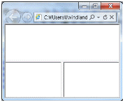
- 〈frameset rows="*,*"〉
〈frame src="1.htm"〉
〈frameset cols="*,*"〉
〈frame src="2.htm"〉
〈frame src="3.htm"〉
〈/frameset〉
〈/frameset〉 - 〈frameset cols="*,*"〉
〈frame src="1.htm"〉
〈frameset rows="*,*"〉
〈frame src="2.htm"〉
〈frame src="3.htm"〉
〈/frameset〉
〈/frameset〉 - 〈frameset rows="*,*"〉
〈frame src="1.htm"〉
〈frame src="2.htm"〉
〈frameset cols="*,*"〉
〈frame src="3.htm"〉
〈/frameset〉
〈/frameset〉 - 〈frameset cols="*,*"〉
〈frame src="1.htm"〉
〈frame src="2.htm"〉
〈frameset rows="*,*"〉
〈frame src="3.htm"〉
〈/frameset〉
〈/frameset〉
(정답률: 60%)

2. 홈페이지를 작성할 때 사용하는 스크립트 언어에 대한 설명으로 올바르지 않은 것은?
- JavaScript는 컴파일 언어로서 컴파일 과정을 거쳐야 한다.
- JavaScript는 클라이언트의 브라우저에서 실행된다.
- 일반적으로 스크립트 언어는 HTML 태그와 같이 사용할 수 있다.
- 스크립트 언어에는 JavaScript, ASP, PHP와 같은 언어가 있다.
(정답률: 58%)
3. 다음 중에서 자바스크립트의 내장 객체와 기능에 대한 설명으로 잘못된 것은?
- window객체 : 최상위 객체로 자바스크립트에서 수행되는 모든 작업을 처리한다.
- link객체: 하이퍼링크 설정과 같이 다른 문서나 URL 위치로 이동할 수 있다.
- image객체: 홈페이지에 삽입된 그림을 제어할 수 있다.
- form객체: 작업 문서에 대한 정보를 알려주는 객체이다.
(정답률: 37%)
4. 다음 중에서 "cook"이라는 쿠키를 지우는 코드로 알맞은 것은?
- Response.Cookies("cook").Expires = Date ? 1
- Response.Cookies("cook").Expires = Date + 1
- Response.Cookies("cook").Delete = Date ? 1
- Response.Cookies("cook").Delete = Date + 1
(정답률: 35%)
5. 다음 중에서 태그의 기능과 사용법에 대한 설명으로 잘못된 것은?
- 〈H숫자〉 태그는 주로 제목을 꾸밀 때 사용하며 글자크기는 1~6까지 제공된다.
- 〈H숫자〉 태그는 숫자가 클수록 글씨가 크다.
- 〈P〉 태그만 단독으로 사용하면 빈 행만 추가된다.
- 〈P〉 태그를 세 번 반복하여〈P〉〈P〉〈P〉 와 같이 사용해도 하나의〈P〉 태그와 같은 기능을 수행한다.
(정답률: 60%)
6. 다음 중에서 인터넷 서비스와 관련된 명령어에 대한 설명으로 가장 적절한 것은?
- finger : 사용자가 멀리 떨어진 곳에서 텍스트 방식으로 서로 메시지를 주고 받을 수 있는 명령어이다.
- tracert : 윈도우즈의 명령 프롬프트에서도 사용 가능한 명령어로서 인터넷에서 연결하고자 하는 특정 서버까지의 경로를 검색하기 위한 명령어이다.
- ping : 특정 사용자의 아이디, 단말기 이름, 접속 시간, 유휴 시간 등의 정보 또는 호스트의 사용자를 조회하기 위한 명령어이다.
- telnet : 제어 메시지 프로토콜을 사용하여 연결 상황과 데이터 전송 상황 및 통계 상황을 출력할 수 있다.
(정답률: 46%)
7. 다음 중에서 웹의 구성에 대한 설명으로 잘못된 것은?
- 웹브라우저 : HTTP를 통신 규약으로 사용하여 웹 서버와 접속하는 웹 브라우저 프로그램
- HTTP(HyperText Transfer Protocol) : WWW 서비스에 사용되는 통신 프로토콜
- 웹서버(Server) : HTTP 프로토콜을 이용하여 접속한 클라이언트 프로그램의 요청을 받아 해당되는 자원을 클라이언트에게 전송
- HTML : 웹 페이지의 내용을 보여주는 인터넷 익스플로러와 같은 프로그램
(정답률: 43%)
8. 다음에 주어진 웹서비스의 작동 순서 중에서 두 번째에 해당하는 것은?
- 서버가 클라이언트에 정보를 전송한다.
- 클라이언트가 서버에 정보를 요청한다.
- 서버가 CGI 프로그램을 실행한다.
- CGI 프로그램이 결과 값을 반환한다.
(정답률: 56%)
9. 다음 중에서 웹 브라우저가 기본적으로 이해하는 정보의 형태를 제외한 동영상, 소리 및 다른 형식의 파일을 보거나 듣기 위해 별도로 설치하는 프로그램을 가리키는 것은?
- 플러그인
- 자바
- 쿠키
- CGI
(정답률: 59%)
10. 태그가 다음과 같이 주어진 상황에서 "일대일 상담"을 클릭했을 때 실행되는 프로그램으로 보기 중에서 가장 적당한 프로그램은 무엇인가?
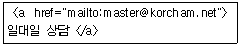
- 아웃룩 익스프레스
- 윈도우즈 미디어 플레이어
- 윈도우즈 무비메이커
- 어도비 리더
(정답률: 70%)
11. 다음 중에서 검색엔진을 키워드형 검색엔진과 메타 검색엔진으로 나눌 때 이들의 가장 중요한 차이점으로 올바른 것은?
- 자체 데이터베이스의 유무
- 자체 정보검색시스템의 유무
- 자체 디렉토리 목록의 유무
- 자체 URL의 유무
(정답률: 48%)
12. 다음 중에서 ASP 에서 제공하는 5가지 기본 객체에 해당하지 않는 것은?
- Application 객체
- Request 객체
- Session 객체
- Window 객체
(정답률: 53%)
13. 다음은 무엇에 관한 설명인가?
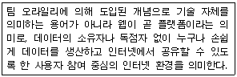
- WWW
- Web2.0
- SNS
- UCC
(정답률: 35%)
14. 다음 중에서 페이스북, 트위터, 싸이월드 등과 같은 SNS의 긍정적 영향으로 보기 어려운 것은?
- 손쉬운 제작을 할 수 있다.
- 개인 홍보수단으로 활용할 수 있다.
- 사생활 및 초상권을 보호할 수 있다.
- 인맥간에 자료를 공유할 수 있다.
(정답률: 72%)
15. 다음은 무엇에 대한 설명인가?
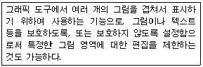
- 레이어
- 히스토리
- 브러시
- 썸네일
(정답률: 75%)
16. 현재 보고 있는 문서를 5초 후에 자동으로 지정된 다른 홈페이지로 이동하게 하기 위한 태그로 올바른 것은?
- 〈META http-equiv="Refresh" content="5";URL="http://www.korcham.net"〉
- 〈META http-equiv="Redirect" content="5";URL="http://www.korcham.net"〉
- 〈META http-equiv="Refresh" time="5";URL="http://www.korcham.net"〉
- 〈META http-equiv="Redirect" time="5";URL="http://www.korcham.net"〉
(정답률: 28%)
17. 검색엔진의 구성요소 중 링크 또는 URL을 따라 네트워크를 돌아다니면서 자료를 수집하는 역할을 하는 것은?
- 검색기(IRS)
- 로봇(Robot)
- 색인기(Indexer)
- 형태소 분석기(Parser)
(정답률: 55%)
18. 다음 중에서 전자우편 프로토콜에 대한 설명으로 잘못된 것은?
- POP3: 메일서버에 도착한 전자우편을 사용자 컴퓨터로 가져오는 프로토콜
- MIME: 웹브라우저가 지원하지 않는 각종 멀티미디어 파일의 내용을 확인하고 실행시켜주는 프로토콜
- NNTP: 사용자의 컴퓨터에서 작성된 메일을 다른 사람의 계정이 있는 곳으로 전송하는 프로토콜
- IMAP : 메일서버에서 전자우편을 읽기 위한 프로토콜로, 메일의 헤드만을 읽을 수도 있는 프로토콜
(정답률: 60%)
19. 다음 중에서 웹에서 사용하기에 가장 적합한 이미지 파일 형식으로 구성된 것은?
- PDF, PNG
- DXF, AI
- JPG, GIF
- PSD, BMP
(정답률: 79%)
20. 다음 중에서 SNS 및 채팅 등에서 사용하는 인터넷 언어의 발생 동기로 가장 거리가 먼 것은?
- 얼굴이 보이지 않지만 상대방에 대한 예의를 지키려는 동기
- 타수를 줄여서 빠르고 편리하게 입력을 하려는 동기
- 일상어와 달리 형태를 바꾸어 통신 분위기를 재미있고 편리하게 하여 친밀감을 나누려는 동기
- 일상생활에서 벗어나 자유로움과 새로움을 경험하려는 동기
(정답률: 43%)
2과목: 전자상거래 일반
21. 다음 중 '협의의 물류'와 '광의의 물류' 개념을 정확하게 기술한 문항을 고르시오.
- 협의의 물류 : 도매점으로부터 소비자에 이르는 재화의 이동을 관리
광의의 물류 : 원자재 조달과 생산을 거쳐 소비자에게 이르는 과정에서 재화와 관련 정보를 관리 - 협의의 물류 : 원자재 조달과 생산을 거쳐 소비자에게 이르는 과정에서 재화와 관련 정보를 관리
광의의 물류 : 생산지점으로부터 소비자까지의 재화의 이동을 관리 - 협의의 물류 : 도매점으로부터 소비자에 이르는 재화의 이동을 관리
광의의 물류 : 생산지점으로부터 소비자까지의 재화의 이동을 관리 - 협의의 물류 : 생산지점으로부터 소비자까지의 재화의 이동을 관리
광의의 물류 : 원자재 조달과 생산을 거쳐 소비자에게 이르는 과정에서 재화와 관련 정보를 관리
(정답률: 32%)
22. 다음 문항 중 디지털 시대에 들어서 나타나는 현상으로 부적합한 내용을 고르시오.
- 고객들의 로열티 감소 및 가격 인하 요구가 거세지고 있다.
- 아웃소싱(outsourcing) 수요의 축소로 인해 가상 공급체인이 점차 증대되고 있다.
- 맞춤화 경향의 확대 및 제품 라이프사이클이 단축되고 있다.
- 신기술 등장 및 이에 대한 응용이 급격히 증대되고 있다.
(정답률: 40%)
23. 다음 내용은 인터넷 비즈니스 모델 중 어떤 모델에 대한 설명인가?
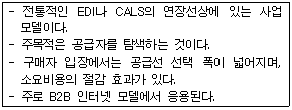
- 전자경매 모델(e-auction model)
- 전자 제3시장 모델(3rd party marketplace model)
- 전자구매 모델(e-procurement model)
- 가상 커뮤니티 모델(virtual community model)
(정답률: 50%)
24. 다음 내용은 물류의 기본적인 기능을 설명한 것이다. 이 중 설명이 잘못된 문항을 고르시오.
- 생산: 소비자에게 제공할 완제품을 제조하는 과정
- 하역: 운송의 양 끝단이나 보관시설에서 물리적으로 화물을 취급하는 기능
- 포장: 상품을 일정한 단위로 정리하고 물류과정의 안전성 확보를 목적으로 함
- 유통/가공: 물류 과정 중 이루어지는 간단한 가공활동 및 물류활동의 원활화를 위한 보조 활동
(정답률: 31%)
25. 전자상거래 환경에서 물류관리를 성공적으로 수행하기 위해 필요한 기법들로 부적절한 내용은 무엇인가?
- 납품 전에 납품에 관한 구체적인 정보를 미리 구매자에게 통보하는 '사전 선적통보' 방식은 소요시간을 절감하는 효과를 가져온다.
- 주문정보가 입력되면 공급자는 시스템에서 발생할지 모르는 오류에 대비하여 이 내용을 문서로 출력하여 '납품 통보' 형태로 주문자에게 전송한다.
- 물품이 납품되고 검수되면, 사전에 약정된 지불조건에 따라 자동적으로 은행에 지불요구서를 전송하여 공급자 계좌에 입금되도록 한다.
- 카탈로그를 전자적으로 기록하여 데이터베이스에서 제공할 수 있도록 한다.
(정답률: 35%)
26. 마이클 포터(M. Porter)는 기업의 환경분석을 수행할 수 있는 '경쟁세력 모형(five competitive model)'을 제시한바 있다. 포터가 제시한 5개의 경쟁세력에 포함되지 않는 항목은 무엇인가?
- 공공정책(public policies)
- 잠재적 진입자(potential entrants)
- 고객(customers)
- 공급자(suppliers)
(정답률: 53%)
27. 다음 용어 중에서 ‘배너광고를 본 사용자들 중 실제로 광고를 보고 광고주의 웹사이트로 옮겨간 사용자의 수’를 의미하는 용어는 무엇인가?
- 클릭률(CTR; click through rate)
- 페이지뷰(page view)
- 방문자 수(visitors)
- 히트수(hits)
(정답률: 37%)
28. 다음 내용은 전자지불시스템에서 갖추어야 할 요건을 기술하고 있다. 어떤 요건에 대한 설명인지를 문항에서 고르시오.
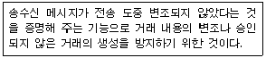
- 무결성(integrity)
- 부인방지(non-repudiation)
- 상호인증(authentication)
- 기밀성(confidentiality)
(정답률: 56%)
29. 다음 내용은 인터넷이 상거래 및 유통 구조에 미친 영향을 기술한 것이다. 잘못 설명된 문항을 고르시오.
- 비용절감과 소요인원 감소 효과를 가져왔다.
- 유통구조 상에서 과거에 소매업체에 위치했던 경로 파워(channel power)가 제조업체로 이동했다.
- 생산자에서 직접 소비자로 연결되는 유통구조가 가능해졌다.
- 온라인 광고시장이 빠르게 성장하여 전통 매체를 이용한 광고 시장의 추월을 가속화하고 있다.
(정답률: 55%)
30. 고객분석에 흔히 사용되는 데이터마이닝은 다양한 형태의 분석에 적용이 가능하다. 다음에서 열거하는 기법 중 어떤 현상에 대한 ‘예측’ 목적으로 활용하기 어려운 기법은 무엇인가?
- 회귀분석(regression)
- 동시발생 매트릭스(co-occurrence matrix)
- 의사결정나무(decision tree)
- 군집분석(cluster analysis)
(정답률: 35%)
31. 다음 중 조직의 의사결정을 스마트하게 수행하도록 지원하는 ‘비즈니스 인텔리전스(BI; business intelligence)’ 솔루션에 포함되지 않은 문항을 고르시오.
- 가치중심경영(VBM; value based management)
- 균형성과관리(BSC; balanced score card)
- 전사적자원관리(ERP; enterprise resource planning)
- 전략적 기업경영(SEM; strategic enterprise management)
(정답률: 60%)
32. 다음 내용을 읽고 ( ) 안에 들어갈 적합한 용어를 고르시오.
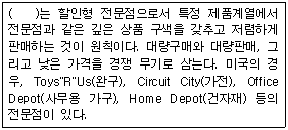
- 수퍼스토어(super store)
- 하이퍼마켓(hypermarket)
- 카테고리 킬러(category killer)
- 아웃렛(outlet)
(정답률: 46%)
33. 다음에서 설명하는 개념은 무엇에 대한 설명인지를 문항에서 고르시오.
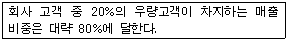
- 무어(Moore)의 법칙
- 파레토(Pareto)의 법칙
- 코어스(Coase)의 법칙
- 길더(Gilder)의 법칙
(정답률: 39%)
34. 다음에서 설명하는 물류방식이 무엇인지를 문항에서 고르시오.
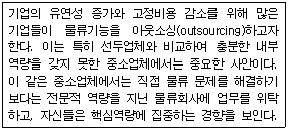
- 역물류
- 제3자 물류
- 운송 경매
- 자체 배송
(정답률: 69%)
35. 다음 내용은 인터넷 제품의 5가지 차원에 대한 설명이다. 이 중 각 차원에 대해 올바로 설명된 문항을 고르시오.
- 핵심제품(core product) - 유형 제품(tangible product)으로서 형태, 포장, 색상, 디자인 등의 구체적으로 형상화된 제품
- 기본제품(basic product) - 고객이 실제로 구입하는 근본적인 편익 또는 서비스
- 기대제품(expected product) - 구입한 제품이 앞으로 새로운 가치를 추가할 것으로 예상되는 가치를 포함하는 제품으로, 흔히 이전 상품/서비스와는 많은 부분에서 차이를 보임
- 확장제품(augmented product) - 부가적 가치를 높이기 위해 추가적인 서비스를 제공하는 제품
(정답률: 48%)
36. 최근 마케팅에서도 위키(wiki)와 같은 집단지성 기법을 고객관리나 마케팅에 활용하는 움직임이 활발하다. 다음 내용 중 위키(wiki)에서 추구하는 철학이 아닌 것을 고르시오.
- 오픈 소스(open source)는 법적인 문제를 초래할 수 있으므로, 신뢰성이 확보된 벤더의 S/W를 이용한다.
- 전통적인 계급구조에서 탈피하여 멤버들에게 '동료'라는 동등한 자격을 부여한다.
- 고객은 생산자인 동시에 소비자이다.
- 독점 자원과 혁신 기술(특히 지적 재산)을 특허나 저작권, 상표를 이용해 보호하고 통제해야 한다는 사고에서 탈피하여 모든 정보를 공유한다.
(정답률: 43%)
37. 다음 내용은 인터넷의 확산이 소비자에게 미치는 영향을 열거하고 있다. 이 중 잘못 기술한 문항을 고르시오.
- 전자상거래 시장의 확산으로 소비자는 능동적 소비자에서 수동적 소비자로 변화되고 있다.
- 소비자는 과거에 누리기 어려웠던 맞춤형 제품이나 서비스를 요구할 수 있게 되었다.
- 제품 구매와 관련된 여러 가지 비용을 절감할 수 있다.
- 다양한 구매조건들을 상호 비교하는 효율적인 수단을 갖게 되었다.
(정답률: 65%)
38. 다음 설명을 읽고 ( )안에 들어갈 적합한 용어를 문항에서 고르시오.
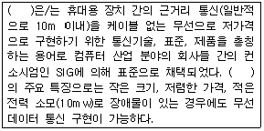
- 블루투스(Bluetooth)
- WLL(Wireless Local Loop)
- 큰거리통신망(LAN; Local Area Network)
- 코드분할다중접속방식(CDMA; Code Division Multiple Access)
(정답률: 60%)
39. 다음 문항 중에서 마케팅 전략 수립을 위한 조사 중 ‘인과적 조사(causal research)’의 예로 가장 적합한 사례를 고르시오.
- A 통신사는 경쟁사인 B사에 비해 자사의 고객이탈률이 높다. A사는 이에 대한 원인을 분석하고 이탈 방지 전략을 수립할 목적으로 인터넷 서베이를 수행했다.
- A사는 향후 5년을 지배할 수 있는 정보기술이 무엇인지를 전혀 예측할 수 없었다. 만약 이러한 정보기술이 파악된다면 게임 S/W 개발에 좋은 단서를 얻으리라 판단하고 전문가들에게 델파이 조사를 의뢰하였다.
- A사의 마케팅 담당자는 신제품 개발에 대한 아이디어를 얻기 위해 관련된 문헌을 다양하게 조사하고 있다.
- A사는 산업의 경쟁사를 벤치마킹함으로써, 경쟁사가 갖고 있는 강점을 사례연구를 통해 파악해 보기로 했다.
(정답률: 41%)
40. 다음 내용은 전통적인 아날로그 시대와 새롭게 등장한 디지털 시대를 비즈니스적 관점에서 특징을 비교한 것이다. 내용이 잘못 기술된 문항을 고르시오.
- 관점 : 기업
아날로그시대 : 내부지향적
디지털시대 : 기업 개념의 확장 - 관점 : 고객
아날로그시대 : 생산업체에 대한 직접 접근
디지털시대 : 생산업체에 제한적 접근 - 관점 : 공급업체
아날로그시대 : 일정 거리 유지
디지털시대 : 전자적(electronic) 관계 유지 - 관점 : 중개업체
아날로그시대 : 독립적이고 분리된 프로세스
디지털시대 : 확장, 공유 개념의 프로세스
(정답률: 62%)
3과목: 컴퓨터 및 통신 일반
41. 다음 중 ‘롱테일(long-tail) 법칙’에 대한 설명으로 올바른 문항을 고르시오.
- 상위 20%의 우량고객이 매출액의 80%를 차지한다.
- 기업 매출액의 대부분은 소수의 핵심고객으로부터 나온다.
- 파레토(Pareto)가 유럽 제국의 소득분포에 관한 조사를 통해 얻은 경험적 법칙으로 ‘파레토 법칙’이라고도 부른다.
- 인터넷 시장에서 인기 판매순위 상위 20%에 해당하는 상품의 총매출보다, 그 외 80%에 해당하는 상품의 총매출이 훨씬 더 크다.
(정답률: 62%)
42. 다음 내용은 전통적인 매스 마케팅으로부터 최근의 관계마케팅에 이르기까지 마케팅 패러다임의 변화를 특징별로 비교한 자료이다. 이 중 잘못 설명된 문항을 고르시오.(문제 오류로 실제 시험장에서는 1번 4번이 정답처리되었습니다. 여기서는 1번을 정답 처리 합니다.)
- 특징 : 시장 접근법
매스 마케팅 : 일대일 마케팅(one-to-one marketing)
관계 마케팅 : 비차별적 마케팅(undifferentiated marketing) - 특징 : 마케팅 목표
매스 마케팅 : 시장점유율(market share), 고객만족도, 매출액
관계 마케팅 : 고객점유율(customer share) - 특징 : 경제 원리
매스 마케팅 : 규모의 경제(economy of scale)
관계 마케팅 : 범위의 경제(economy of scope) - 특징 : 관리 초점
매스 마케팅 : 고객관리(customer management)
관계 마케팅 : 제품관리(product management)
(정답률: 55%)
43. 다음의 표는 과거 전자상거래 개념이 진화되어 온 과정을 보여주고 있다. 이 과정에서 2000년대 이후에 적극적으로 나타나는 EC 개념으로 가장 적합한 문항을 고르시오.
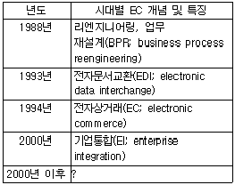
- 동시공학(CE; concurrent engineering)
- 가상기업(VC; virtual corporation)
- 광속상거래(CALS; commerce at light speed)
- 비즈니스프로세스관리(BPM; business process management)
(정답률: 45%)
44. 다음 중 '네트워크형 전자화폐'의 특징을 올바로 기술한 문항을 고르시오.
- 보급을 위한 비용이 많이 소요되지 않는다.
- 휴대가 간편하다.
- 신용카드, 직불카드, 신분증 등 다목적으로 사용될 수 있다.
- 스마트 카드(smart card)라고도 불린다.
(정답률: 20%)
45. 모바일인터넷 통신에 대한 설명 중 옳지 않은 것은?
- 3G란 3-세대 이동통신 기술을 일컫는 말로 음성 및 비음성 데이터를 전송할 수 있다.
- Wi-Fi란 IEEE802.11 기반의 무선랜 연결과 장치간 연결 등을 지원한다.
- LTE는 대략 1.4Mhz에서 20Mhz까지의 대역폭을 사용한다.
- Wi-Fi는 100m이내에서는 LTE보다 빠른 11Mbps의 전송속도를 가진다.
(정답률: 50%)
46. 서버의 종류와 그에 대한 설명 중 잘못된 것은 무엇인가?
- Web Server : 웹 서비스를 위해 만든 서버
- FTP Server : 파일 전송 서비스를 위해 만든 서버
- Mail Server : 메일 송수신을 위해 만든 서버
- SQL Server : 채팅을 위해 만든 서버
(정답률: 67%)
47. 다음 중에서 인터넷 프로토콜인 TCP 프로토콜에서 제공하는 기능에 해당되지 않는 것은?
- 연결설정 및 해제
- 오류검출 및 재 전송
- 흐름제어
- 경로배정
(정답률: 24%)
48. 해커로부터의 공격 시 공격사이트의 IP주소를 알게 된 경우 대응할 수 있는 조치 중 올바르지 않은 것은?
- 공격자와 관련된 사이트의 연락처를 찾아서 경고 또는 통지 메일을 발송한다.
- 공격이 지속적이고 위협적일 경우 라우터, 침입차단시스템, 시스템 등에서 공격자를 적극적으로 차단하는 방법을 취한다.
- 해커의 공격에 의해 피해를 입은 경우 법적인 조치를 취한다.
- 공격을 시도한 IP주소의 사이트를 역공격하여 상대방의 시스템을 무력화 시킨다.
(정답률: 64%)
49. 다음과 같은 설명에 가장 적절한 악성프로그램은 무엇인가?
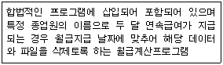
- 트랩도어
- 논리폭탄
- 트로이목마
- 웜 바이러스
(정답률: 20%)
50. 모바일 인터넷 프로그램 중의 하나인 안드로이드 프로그램 OS의 특징이 아닌 것은?
- 공개 운영체제인 Linux기반의 커널을 사용한다.
- JAVA를 공식언어로 사용한다.
- 개발도구가 무료로 공개되며, 다양한 운영체제에서 개발할 수 있다.
- 모바일 폰 안에서 데이터베이스 처리를 위하여 SQL Server를 사용한다.
(정답률: 34%)
51. 다음에 대한 설명으로 가장 거리가 먼 것은 무엇인가?
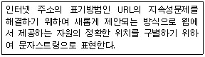
- URI (Uniform Resource Identifier)
- URC (Uniform Resource Citation)
- URN (Uniform Resource Name)
- URS (Uniform Resource Signatue)
(정답률: 30%)
52. 컴퓨터시스템의 구성요소 및 관련 장치에 대한 연결 중 올바른 것은?
- 입력장치 : 캠코더, 키보드 , 모니터
- 처리장치 : CPU , ALU , 마우스
- 출력장치 : 모니터, 플로터 , 키보드
- 저장장치 : 하드디스크 , CD-ROM, USB
(정답률: 62%)
53. 다음의 프로토콜에 대한 설명 중에서 올바른 것은?
- RIP : 자동으로 인터넷 IP 주소를 할당해 준다.
- DHCP : 라우팅 정보를 다른 라우터에 전달해 준다.
- WINS : 마이크로소프트사에서 제공하는 오류제어 프로토콜이다.
- ARP : 논리적인 주소인 IP주소를 물리적인 주소인 MAC주소로 변환해 준다.
(정답률: 44%)
54. 다음 설명의 통신 방식으로 올바르게 짝 지워진 것은 무엇인가?
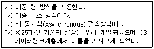
- 가) ATM 나) DQDB 다) Frame Relay 라) FDDI
- 가) FDDI 나) DQDB 다) ATM 라) Frame Relay
- 가) FDDI 나) ATM 다) DQDB 라) Frame Relay
- 가) ATM 나) DQDB 다) Frame Relay 라) FDDI
(정답률: 23%)
55. 캐시메모리의 역할에 대한 설명 중 옳지 않은 것은?
- 캐시메모리는 컴퓨터의 작동속도를 향상시키는 장치의 하나이다.
- 1차 캐시메모리는 하드디스크에 존재하며 2차 캐시메모리는 CPU내부에 있다.
- 1차 캐시메모리 보다 2차 캐시 메모리의 속도가 더 느리다.
- 1차 캐시메모리 보다 2차 캐시메모리의 용량이 더 크다.
(정답률: 29%)
56. 허브(hub) 또는 라우터(router) 의 종류 중 그 설명이 잘못된 것은 무엇인가?
- 더미(dummy) 허브 : 연결된 컴퓨터의 수에 관계없이 일정한 대역폭 유지
- 스위치(switch) 허브 : 스위치 기능을 가진 허브로 일정한 대역폭 유지
- 스태커블(stackable) 허브 : 여러 개의 허브를 묶어 하나의 허브로 사용가능
- 라우터(router) : 가장 최적의 경로를 찾아 다른 네트워크로 데이터 전송
(정답률: 43%)
57. 다음 X.25 프로토콜에 관한 설명 중 올바르지 않은 것은?
- DTE와 DCE사이의 데이터 송수신에 관련된 접속을 규정한다.
- 호스트시스템과 패킷교환 네트워크간의 인터페이스를 제공하는 ITU-T표준이다.
- 네트워크계층, 데이터링크계층, 트랜스포트계층과 관련되어 있다.
- PAD(Packet Assembler Deassembler)와 관련되어 있다.
(정답률: 40%)
58. 개인용 PC가 바이러스에 감염된 경우 나타날 수 있는 증상과 가장 거리가 먼 것은?
- 엑셀, 파워포인트 등의 마이크로소프트 오피스 프로그램의 실행이 불가능 해 진다.
- 파일의 길이가 커지거나 파일작성일이 바뀔 수 있다.
- 통신 시 수신되는 패킷이 가로채어 위장될 수 있다.
- BIOS 파괴로 인하여 부팅이 불가능 해 진다.
(정답률: 40%)
59. 다음은 어떤 용어에 관한 설명인지 가장 적절한 용어를 고르시오.
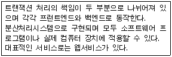
- 클라이언트/서버 시스템
- P2P 서버 시스템
- cloud 서버 시스템
- DNS
(정답률: 40%)
60. 프로그램 번역기의 기능 중 로더의 기능과 각 기능에 대한 설명이 서로 맞지 않은 것은 ?
- 할당 : 프로그램이 들어갈 주기억 장소를 배정한다.
- 연결 : 외부 모듈간을 연결시킨다.
- 재배치 : 프로그램의 주소를 다시 조정하여 연산처리를 수행한다.
- 적재 : 프로그램과 데이터를 실제 기억장소에 적재시킨다.
(정답률: 50%)
〈frame src="1.htm"〉
〈frameset cols="*,*"〉
〈frame src="2.htm"〉
〈frame src="3.htm"〉
〈/frameset〉
〈/frameset〉" 입니다.
이유는 먼저, 첫 번째 〈frameset〉 태그에서는 두 개의 행(row)으로 구성된 프레임셋을 만들고, 첫 번째 프레임에는 "1.htm" 파일을 로드합니다. 그리고 두 번째 〈frameset〉 태그에서는 두 개의 열(col)로 구성된 프레임셋을 만들고, 첫 번째 열에는 "2.htm" 파일을 로드하고 두 번째 열에는 "3.htm" 파일을 로드합니다.
따라서, 첫 번째 〈frameset〉 태그에서 행(row)을 사용하고 두 번째 〈frameset〉 태그에서 열(col)을 사용하는 것이 올바른 구조입니다.